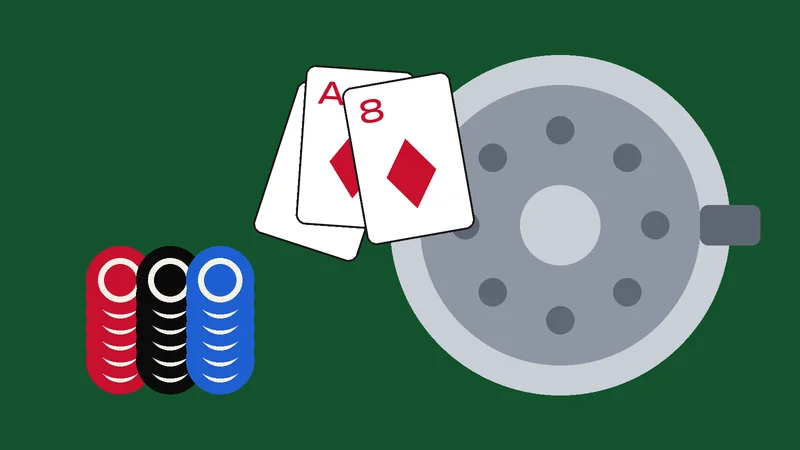
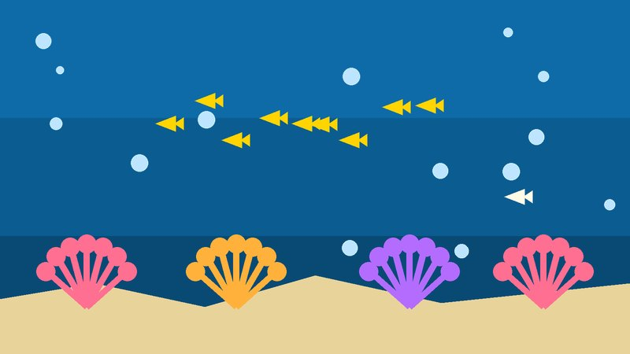
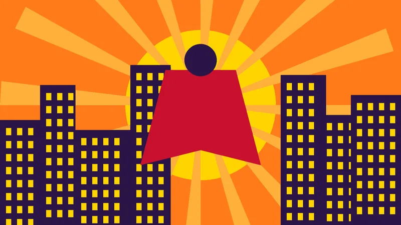
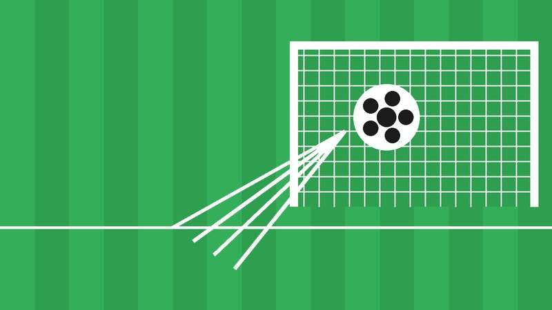
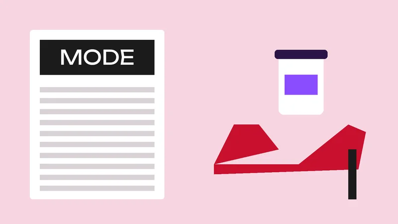
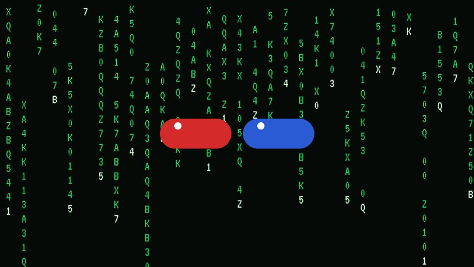
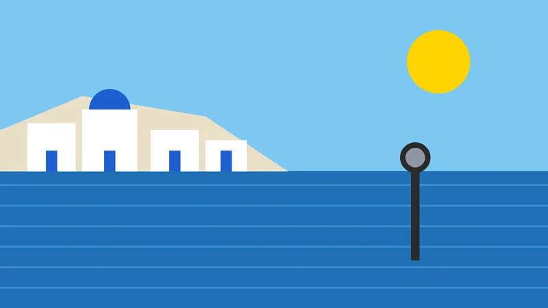
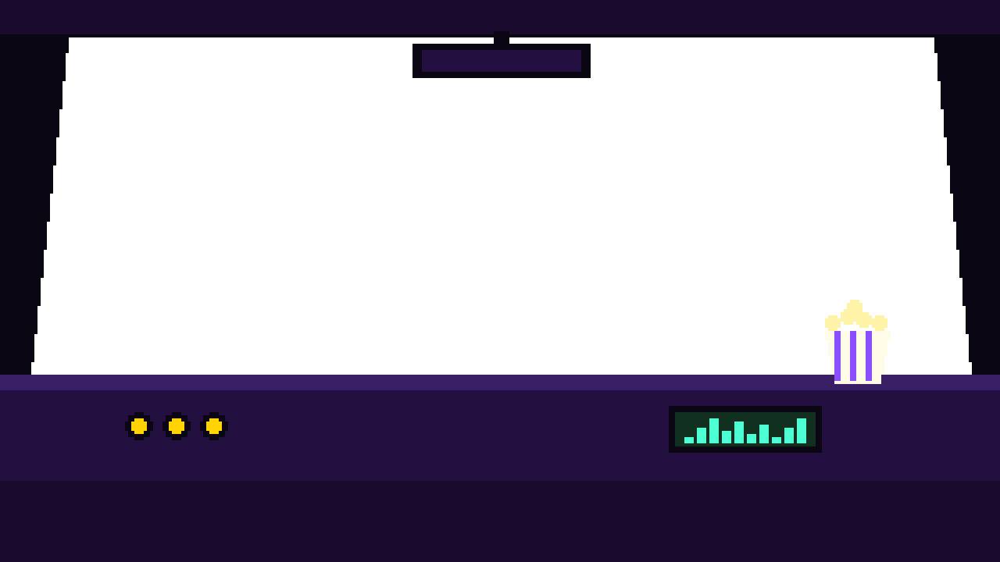
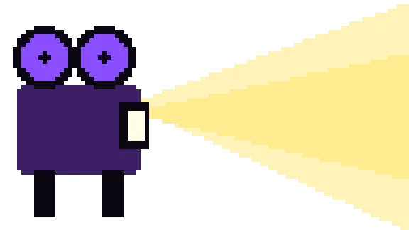

quiz.exe
Das Y2K-Quiz
Wer kennt noch den Klingelton-Hit des Jahres 2004? Jedes Auto bildet ein Quiz-Team, gemischte Abteilungen bekommen einen Bonuspunkt.

1 / 7








Lenk dich durchs Programm: Pfeile am Lenkrad drücken! (Ohne JavaScript: Leinwand seitlich wischen.)
Sieben Freitage, sieben Kultfilme aus der Zeit um das Jahr 2000. Oben im Cockpit könnt ihr mit den Pfeilen am Lenkrad durch alle Filme blättern. Jeder Abend hat ein Team-Motto, das sich durch Quiz, Fotobox und Snacks zieht. Die Filme laufen in deutscher Fassung, der Ton kommt über UKW direkt in euer Autoradio.
| Datum | Film | Team-Motto | Rahmenprogramm |
|---|---|---|---|
| Ocean’s Eleven (2001) | Das perfekte Team | Heist-Quiz: Wer plant am besten? | |
| Findet Nemo (2003) | Niemand wird zurückgelassen | Unterwasser-Fotobox | |
| Die Unglaublichen (2004) | Jede Stärke zählt | Superkraft-Steckbriefe fürs Team | |
| Kick It Like Beckham (2002) | Zusammen ins Tor | Torwandschießen Abteilung gegen Abteilung | |
| Der Teufel trägt Prada (2006) | Überleben im Büroalltag | Y2K-Outfit-Wettbewerb | |
| Matrix (1999) | Raus aus der Routine | Pixel-Code-Rätsel | |
| Mamma Mia! (2008) | Saisonfinale zum Mitsingen | Karaoke vor dem Film |
Bei Gewitter oder Sturm verschieben wir den Abend auf den folgenden Samstag. Gebuchte Pakete bleiben gültig.

Wer kennt noch den Klingelton-Hit des Jahres 2004? Jedes Auto bildet ein Quiz-Team, gemischte Abteilungen bekommen einen Bonuspunkt.
Glitzerbrillen, Klapphandys und Plateauschuhe als Requisiten. Die Bilder bekommt ihr am nächsten Tag als Galerie für euer Intranet.
Popcorn gibt es süß, salzig oder mit Zimt. Für Allergien und Unverträglichkeiten haben die Trucks eine eigene Karte.